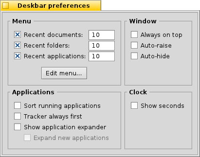

Українська
Українська Français
Français Deutsch
Deutsch Italiano
Italiano Русский
Русский Español
Español Svenska
Svenska 日本語
日本語 中文 ［中文］
中文 ［中文］ Português
Português Suomi
Suomi Slovenčina
Slovenčina English
English| Зміст |
|
Меню Deskbar Трей Список запущених команд |
Панель задач - Deskbar
Deskbar - це маленька панель, що по замовчуванню розташована у верхньому кутку екрана . Вона є аналогом меню Пуск у Віндовс і містить меню з якого ви можете запустити необхідні додатки, настройки, а також трей з годинником і список запущених додатків внизу.

Ви можете перемістити Deskbar до будь-якого кута або розмістити як панель вздовж верхньої або нижньої межі екрану захопивши за шорстку зону в районі трея і drag&drop потягнути на нову позицію. Ви також можете згорнути його до компактного вигляду посунувши за шорстку зону в напрямку меню Deskbar.
 Меню Deskbar
Меню Deskbar
Меню відкриється коли клікнути по верху Deskbar'a:

Про цю систему (About This System...) - Показує базову інформацію про систему, ліцензії і подяки проекту Haiku.
Find... - Відкприває пошуковий діалог Query.
Show Replicants - Показує/ховає маленький віджет Replicant переміщує його, видаляє , дає доступ до контекстного меню.
Змонтувати (Mount) - Надає ті самі опції що і при правокліку по робочому столу (дивись Mounting Volumes).
Настройки Deskbar ... - Відкриває панель конфігурації Deskbar (див. нижче).
Завершення роботи (Shutdown) - Пропонує опції або .
Недавні додатки, документи, папки - Список додатків, документів, папок, котрі відкривалися недавно (дивись below).
Додатки, Демододатки, аплети Deskbar, Настройки - Список додатків, демододатків, аплетів і настройок (дивись нижче).
Настройки Deskbar

Меню
Тут Ви можете виставити кількість додатків, документів, папок, котрі будуть зображатися в меню Deskbar.
Кнокка відкриє папку /boot/home/config/be/. В ній ви знайдете файли і папки, щовідображаються в Deskbar, по замовчуванню це , , і .
Ви можете додати, видалити такі елементи, як додатки, документи, папки і навіть запити шляхом простого копіювання або видалення.Ще простіше - елементарно перенесіть файл, папку, посилання або запит прямо в Deskbar.
Window
The Deskbar always stays above all other windows. The Deskbar pops to the front if the mouse pointer touches it. The Deskbar is reduced to only a few pixels and only pops up if the mouse pointer touches them. Applications
Sorts the list of running programs alphabetically. Even if you sort alphabetically, the Tracker entry always stays first in the list. Provides a small widget to show/hide all windows of a program directly under its entry in the Deskbar. Newly launched programs have their windows automatically expanded under their entry in the Deskbar. Removes the text labels of running applications. Adjusts the icon size of running applications. Clock
Adds the display of seconds to the clock. Adds the abbreviation of the weekday to the clock.
Трей

Окрім іншого в треї розташований годинник. Лівоклік мишки змінює показ часу на дату і навпаки.Правоклік по ньому викликає контекстне меню, з якого можна запустити настройку часу, дати і часової зони.
Будь-яка програма може встановити іконку в трей для забезпечення швидкого доступу. Почтовий клієнт, наприклад, показує іншу іконку, коли є непрочитані листи і пропонує контекстне меню.Іншим прикладом є Інспектор процесів (ProcessController) що використовує іконку в треї, яка показує нагрузку процесора, використання пам'яті а також пропонує контекстне меню.
Список запущених додатків

Ви можете звернутись до запущеного додатку, якщо натиснути на нього в списку Deskbar, вибрати будь-яке вікно з підменю. Правокліком по додатку Ви можете звернути або закрити вікна додатку або сам додаток.
Якщо Ви активували відображення експандера в настройках Deskbar, то зможете згортати/розгортати список вікон додатку.
Перед кожним вікном додатку знаходиться іконка, що показує стан вікна. Світла іконка означає що вікно розгорнуте, темна - згорнуте. Три полоски перед іконкою означають, що вікно знаходиться на іншому робочому столі.